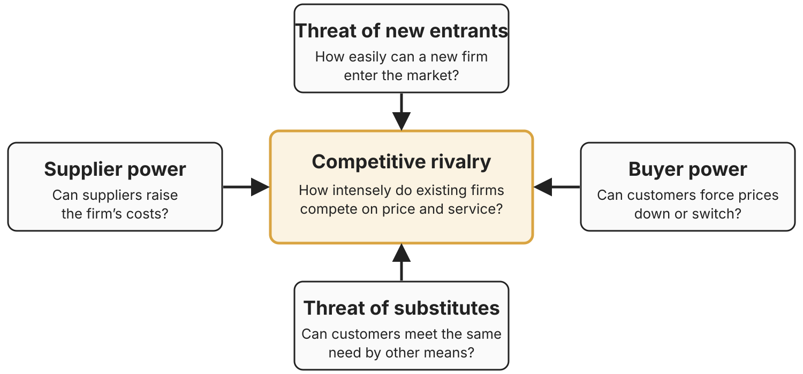

Porter’s Five Forces and the Strategic Options Matrix
Porter’s Five Forces, industry analysis, industry attractiveness, competitive rivalry, buyer power, supplier power, Strategic Options Matrix, feasibility
Chapter 6: External Factors for Decision Making
An events company in the Maldives asks: how hard is it to make a profit in our market, and which of our growth options should we pursue? The first half of the answer comes from outside the firm, from the pressures the market puts on every firm in it. The second half weighs each option’s appeal against what the firm can deliver.
This chapter uses Week6_Porter_Scenario_Data.csv, which scores 40 industry scenarios on the five forces. Every figure attributed to that file comes from it. The events company’s own scores and options are illustrations, and each is marked as such.
This chapter’s lecture
Lecture External analysis and strategic options
Discussion
1 Welcome and weekly goals
⏱ 10 min
Move from statistical testing into strategic decision-making by focusing on the external environment.
Acquisition
2 Porter and strategic options
⏱ 30 min
How the Five Forces help you judge market pressure and industry attractiveness, and how that judgement points to a strategic response.
Practice
3 Worked example and discussion
⏱ 15 min
Discuss a short case and explain which external pressure most changes the recommendation.
Assessment
4 Exit check
⏱ 5 min
A short exit check on one force and one likely strategic implication.
Learning objectives
After studying this chapter you should be able to:
- Identify Porter’s five forces in an industry description. CLO 3
- Calculate an industry’s attractiveness from its force scores. CLO 3
- Relate a pattern of forces to a broad strategic response. CLO 3
- Classify strategic options on the Strategic Options Matrix. CLO 3
- Integrate an attractiveness score with a feasibility judgement for one option. CLO 3
- Write a recommendation that draws on both frameworks. CLO 6
The tag after each objective names the course learning outcome it serves.
This week’s learning plan is 9 hours: 1 hour of synchronous lecture, 2 hours of synchronous tutorial and 6 hours of asynchronous self-study. Put your self-study time into the worked examples, the Try It exercises and the two FlairMI tools first.
We need no statistical software in this chapter. Keep a calculator beside you, and open the scenario file in a spreadsheet if you want to check a figure.
You are permitted to use Google NotebookLM to brainstorm the concepts. Complete the worked examples and the Try It exercises yourself, with no AI assistance. The full policy is on the Using AI on This Module page.
In chapter 5 we compared groups of customers inside one firm. In this chapter we turn to the market around the firm, and then to the choices that market leaves open.
Porter’s Five Forces
Two events companies can be equally well run and still earn very different profits. For example: one organiser competes with a few rivals, books from many venues and sells to guests who rarely compare prices. A second organiser depends on one boat operator for guest transfers and sells to guests who compare every package online. The second firm keeps less of each sale, because more of the market’s pressure falls on it.
Porter’s Five Forces is a framework for judging how attractive an industry is from the five pressures that hold down the profits of every firm in it. Michael Porter of Harvard Business School introduced it in 1979. Its central idea is that profit depends on the structure of the market as well as on the firm itself (Porter, 2008).

We use each force to answer one question about the industry. Strong forces reduce the profit available to the firms in it. We follow one illustrative firm through all five: a Maldives events company that runs conferences and celebrations for resort guests and local businesses.
Competitive rivalry
How hard do the firms already in the market fight each other on price, service and promotion? Rivalry is stronger when:
- there are many competitors of similar size
- the market grows slowly, so one firm grows only by taking customers from another
- the offers are hard to tell apart
- leaving the market is costly, so weak firms stay
For example: if six organisers of similar size bid for the same resort contracts each season, our events company faces strong rivalry.
Threat of new entrants
How easily can a new firm start competing? The threat is higher when:
- little money or expertise is needed to start
- customers have little loyalty to existing brands
- licences and regulation are light
- new firms reach customers easily
For example: a freelance planner with a social media page can take small celebrations from our company, while a 500-guest conference needs equipment and contacts that take years to build.
Bargaining power of suppliers
Can suppliers raise the firm’s costs or cut its quality? Supplier power is higher when:
- a few suppliers control a key input
- switching supplier is costly or slow
- the input has no close substitute
For example: on a small island, our company may depend on one boat operator for guest transfers, which gives that supplier strong power.
Bargaining power of buyers
Can customers push prices down or demand more for the same price? Buyer power is higher when:
- buyers can switch provider at little cost
- buyers are price-sensitive
- buyers can compare prices and products easily, for example online
For example: a resort that books 20 events a year can ask our company for a discount, and a couple planning one wedding usually has less bargaining power.
Threat of substitutes
Can customers meet the same need in a different way? A substitute is a different product that does the same job. For example: a virtual conference is a substitute for an in-person event, and a resort’s own in-house team is a substitute for hiring our company. The threat is higher when substitutes are cheap, good enough and easy to switch to.
Each statement describes the Maldives events company’s market. Name the force each one raises.
- A new low-cost airline makes it cheaper for overseas planners to fly in and bid for contracts.
- Two resort chains now book 60% of all events on the island.
- More companies hold their annual meetings online.
- The island’s only sound and lighting hire firm raises its prices by 15%.
- Three organisers cut their prices to win the same New Year contract.
- Threat of new entrants: a lower cost of reaching the market lets new firms start competing.
- Bargaining power of buyers: two large buyers control most of the demand.
- Threat of substitutes: an online meeting does the same job as an in-person event.
- Bargaining power of suppliers: a single supplier controls a key input.
- Competitive rivalry: firms already in the market fight on price.
Reading the forces together
We score each force, then read the five scores together. In Week6_Porter_Scenario_Data.csv each force is scored from 1 to 10:
| Score | Pressure |
|---|---|
| 1 to 3 | Low |
| 4 to 6 | Medium |
| 7 to 10 | High |
The file summarises each scenario with two numbers:
\[\text{Mean force score} = \frac{F_1 + F_2 + F_3 + F_4 + F_5}{5}, \qquad \text{Attractiveness} = 10 - \text{mean force score}\]
where \(F_1\) to \(F_5\) are the five force scores, and attractiveness is rounded to a whole number. The rule holds for all 40 scenarios in the file. A low mean force score means weak pressure and a high attractiveness. Across the 40 scenarios, the two columns correlate at \(r = -.96\): the higher the pressure, the less attractive the industry.
A force score is a judgement on an ordered scale, so the mean of five scores is a convention. We report it alongside the five scores themselves, and we name the strongest force: the force with the highest score, which usually shapes the strategy most. One high force with four low ones describes a different industry from five medium forces, even when the two means are close.
Worked example 6.1
Scoring the events company’s market (illustrative)
A planning team scores the Maldives events company’s market as follows: rivalry 6, new entrants 4, suppliers 8, buyers 7 and substitutes 5, as an illustration.
Calculate the mean force score and the attractiveness, name the strongest force, and describe the pressure on the industry.
Mean force score: \((6 + 4 + 8 + 7 + 5) \div 5\), which is \(30 \div 5 = 6.0\).
Attractiveness: \(10 - 6.0 = 4\), on a scale of 0 to 10.
Strongest force: supplier power, at 8. Buyer power follows at 7, and both are high on Table 6.1.
Reading: pressure is medium overall, with two high forces. The single boat operator and the large resort buyers squeeze our company from both sides, so a strategy should reduce dependence on one of them, for example by contracting a second transfer operator.
Worked example 6.2
Two industries compared
Two scenarios in the file score as follows:
| Scenario | Rivalry | Entrants | Suppliers | Buyers | Substitutes | Mean | Attractiveness |
|---|---|---|---|---|---|---|---|
| 26, financial services | 3 | 2 | 2 | 3 | 3 | 2.6 | 7 |
| 3, tourism | 3 | 4 | 7 | 7 | 8 | 5.8 | 4 |
For each scenario, check the attractiveness against the rule, name the strongest force and judge the industry.
Scenario 26: \(10 - 2.6 = 7.4\), which rounds to 7. Every force scores 3 or below, so no force is strong, and the industry is attractive.
Scenario 3: \(10 - 5.8 = 4.2\), which rounds to 4. Rivalry is low, but suppliers (7), buyers (7) and substitutes (8) press hard, and the strongest force is the threat of substitutes. The industry is less attractive, and its weak point is that customers can meet the same need elsewhere.
From forces to strategy
We link each pattern of forces to a broad response. The scenario file contains five labels:
| Response | Typical pattern of forces |
|---|---|
| Invest and grow | Low pressure across the forces |
| Selective investment | Mixed pressure: invest where the position is strong |
| Differentiation | Strong buyer or substitute pressure: offer something customers value and rivals lack |
| Cost leadership | Strong price pressure from rivals or buyers: win on cost |
| Harvest or exit | High pressure across the forces |
Differentiation and cost leadership are two of Porter’s generic strategies. A differentiating firm offers something customers value and cannot get elsewhere. A cost leader offers the same as its rivals at a lower cost.
The file’s recommendations follow the pattern of forces, and attractiveness alone leaves the choice open. For example: the 12 scenarios with an attractiveness of 4 carry three different recommendations, cost leadership in 5, selective investment in 4 and differentiation in 3. So scenario 3 in Table 6.2 is recommended differentiation, because its strongest force is the threat of substitutes, and scenario 26 is recommended invest and grow.
Scenario 12, financial services, scores 8 for rivalry, 6 for new entrants, 7 for suppliers, 7 for buyers and 6 for substitutes.
- Calculate the mean force score and the attractiveness.
- How many forces are high, and how many medium?
- Which response from Table 6.3 fits, and why?
- \((8 + 6 + 7 + 7 + 6) \div 5\), which is \(34 \div 5 = 6.8\), the highest mean in the file. Attractiveness is \(10 - 6.8 = 3.2\), which rounds to 3.
- Three forces are high (rivalry 8, suppliers 7, buyers 7) and two are medium (6 each).
- Harvest or exit, which is the file’s recommendation: pressure is medium to high on every force, so the industry offers no weak spot to build on.
Scenario 33, hospitality, scores 8 for rivalry, 7 for new entrants, 2 for suppliers, 10 for buyers and 2 for substitutes.
- Calculate the mean force score, and compare it with scenario 3 in Table 6.2.
- Name the strongest force in each scenario.
- Explain why the two industries call for different actions, even with the same mean.
- \((8 + 7 + 2 + 10 + 2) \div 5\), which is \(29 \div 5 = 5.8\), the same as scenario 3, and both scenarios have an attractiveness of 4.
- Scenario 33: buyer power, at 10, followed by rivalry at 8. Scenario 3: the threat of substitutes, at 8.
- In scenario 33 a few powerful buyers set the terms, so the firm needs an offer those buyers value enough to pay for, or a wider spread of buyers. In scenario 3 customers can leave for substitutes, so the firm needs to make its own offer harder to replace. The recorded recommendation is differentiation for both, aimed at a different force in each.
Scoring a market with the Five Forces Analyser
The embedded FlairMI Five Forces Analyser scores an industry statement by statement. Choose Start blank, name a market, and score each statement from 1 (strongly disagree) to 5 (strongly agree). Use the Notes box under each force for your reasons. The analyser works on a 1 to 5 scale and reports attractiveness as 6 minus the mean force, so its numbers differ from the 1 to 10 scale in the scenario file, and we read them the same way.
The Strategic Options Matrix
A Porter analysis gives us an attractiveness rating for a market. A firm still has to choose among its own options, and an attractive option can be out of reach. For example: our events company is weighing five ways to grow, and the planning team rates each one from 0 to 10 on two questions. How attractive is the option? How far can our company’s people, skills and funds deliver it?
| Option | Attractiveness | Feasibility | Investment |
|---|---|---|---|
| Corporate retreats | 7 | 7 | 3 |
| International conferences | 8 | 3 | 8 |
| Local workshops | 4 | 9 | 1 |
| Virtual events platform | 6 | 4 | 5 |
| Wedding planning | 3 | 4 | 2 |
The Strategic Options Matrix plots each option on these two scales. Attractiveness runs up the side: how much the option is worth, which a Porter analysis of its market can supply. Feasibility runs along the bottom: how far the firm’s resources, capabilities and funds can deliver it. Lines at 5 on each scale divide the grid into four quadrants, and the bubble size shows the investment each option needs.
| Quadrant | Attractiveness | Feasibility | Approach |
|---|---|---|---|
| Pursue | 5 or above | 5 or above | Commit resources and set milestones |
| Build capability first | 5 or above | below 5 | Name the resource or partner that would close the gap |
| Quick win, limited upside | below 5 | 5 or above | Take it if it is cheap and keeps attention on the main plan |
| Set aside | below 5 | below 5 | Revisit if the market or the firm changes |
An option close to a line, such as an attractiveness of 5.5, is a judgement call. Those are the options to argue for most carefully in a report.
Worked example 6.3
Five growth options on the matrix
Use the ratings in Table 6.4.
Place each option in its quadrant, and decide which option the events company should pursue first.
Placing the options, reading attractiveness first and feasibility second:
| Option | Attractiveness | Feasibility | Quadrant |
|---|---|---|---|
| Corporate retreats | 7, 5 or above | 7, 5 or above | Pursue |
| International conferences | 8, 5 or above | 3, below 5 | Build capability first |
| Local workshops | 4, below 5 | 9, 5 or above | Quick win, limited upside |
| Virtual events platform | 6, 5 or above | 4, below 5 | Build capability first |
| Wedding planning | 3, below 5 | 4, below 5 | Set aside |
Decision: corporate retreats are the one option in the Pursue quadrant, so we pursue them first, at an investment of 3. International conferences are the most attractive option, but our company lacks the contacts and equipment today. The plan should name what would close that gap, such as a partnership with an overseas organiser. Local workshops are cheap, at an investment of 1, and can run alongside the main plan.
Porter feeds the matrix
We connect a Porter analysis to the Strategic Options Matrix through attractiveness. When an option is a move into a market, we take its attractiveness from a Porter analysis of that market, and we judge its feasibility from what the firm itself can deliver. In chapter 7 we judge the firm’s resources in a structured way, with the resource-based view and VRIO.
The embedded FlairMI Strategic Options Matrix opens on the five options in Table 6.4. Use its controls to load the sample file, which holds the same 40 Porter scenarios as Week6_Porter_Scenario_Data.csv, and pick a scenario. The tool adds it as an option at its Industry_Attractiveness, and we set its feasibility.
Worked example 6.4
Two client markets, from Porter to the matrix
The events company considers two new client markets. Tourism clients match scenario 3 in Table 6.2, and financial services clients match scenario 26. Our company already runs events for resort guests, so the planning team rates its feasibility at 8 for tourism. It has no contacts in banking, so it rates financial services at 4. The planning team’s feasibility ratings are illustrative.
Place both markets on the matrix, and compare the matrix’s verdict with Porter’s recommendation for each scenario.
Attractiveness, from the file: tourism 4, financial services 7.
Quadrants: tourism has attractiveness 4 and feasibility 8, so it is a quick win, limited upside. Financial services has attractiveness 7 and feasibility 4, so we build capability first.
Comparison: the scenario file records invest and grow for scenario 26 and differentiation for scenario 3. Adding the matrix brings our company’s feasibility into the decision. Financial services is the better market, but our company has to build banking contacts before it can win there. Tourism is within reach today but has limited upside on these ratings, and differentiation is the file’s recommended response to its strongest force.
A firm considers three markets from the scenario file and rates its own feasibility for each.
| Scenario | Mean force score | Feasibility |
|---|---|---|
| 1, retail | 4.4 | 7 |
| 2, retail | 6.2 | 2 |
| 20, retail | 3.8 | 3 |
- Calculate each market’s attractiveness from its mean force score.
- Place each market in its quadrant.
- Which market should the firm pursue, and what should it do about the others?
- Scenario 1: \(10 - 4.4 = 5.6\), which rounds to 6. Scenario 2: \(10 - 6.2 = 3.8\), which rounds to 4. Scenario 20: \(10 - 3.8 = 6.2\), which rounds to 6. All three match the file’s
Industry_Attractiveness. - Scenario 1, attractiveness 6 and feasibility 7: pursue. Scenario 2, 4 and 2: set aside. Scenario 20, 6 and 3: build capability first.
- Pursue scenario 1. Set scenario 2 aside. For scenario 20, name the resource the firm lacks and decide whether it is worth building.
Using the frameworks in a recommendation
A recommendation uses a framework in three steps:
- Evidence: state the finding the recommendation rests on.
- Framework: name the force or the quadrant the evidence relates to, and explain the link.
- Action: state what management should do, and what to monitor.
For example: in our teaching file, satisfaction before the event correlates strongly with satisfaction after it, \(r = .88\) (chapter 9). Buyer power in the events market is high, because customers compare packages online and switch at little cost, so a customer who ends the event dissatisfied can easily book elsewhere next time. Customers who start low tend to finish low, and we recommend monitoring pre-event satisfaction at the next three events and following up every low early rating before the event day. The correlation identifies these customers. A trial of new pre-event communication would test whether it raises their later ratings.
Use worked example 6.4. Write a three-sentence recommendation for the events company’s board, with one sentence each for the evidence, the framework and the action.
A model answer: Evidence: financial services clients face a market with an attractiveness of 7, against 4 for tourism clients, and our feasibility is 4 for financial services against 8 for tourism. Framework: on the Strategic Options Matrix, financial services sits in Build capability first and tourism in Quick win, limited upside. Action: we recommend growing tourism events now with a differentiated offer, while building banking contacts through one partner over the next 12 months, and re-rating feasibility at the end of that period.
Your answer may differ in its action. Check that each sentence does its own job and that every number comes from worked example 6.4.
Limitations
- The forces describe the market at one moment, and markets change over time.
- Every force score and every feasibility rating is a judgement, so a report gives the evidence behind it.
- A mean force score applies arithmetic to ordered scores, a convention we name in any report that uses it.
- Porter (2008) noted that government policy, technology and complementary products also shape profits, although he did not count them as forces.
- The matrix compares options one at a time. Two options that compete for the same people or funds need a further judgement on which comes first.
Section summary
Porter’s Five Forces judges an industry by five pressures: rivalry, new entrants, supplier power, buyer power and substitutes. In the scenario file each force is scored from 1 to 10, the mean force score averages the five, and attractiveness is 10 minus that mean, rounded. We read the strongest force alongside the mean, because the strongest force shapes the response: invest and grow, selective investment, differentiation, cost leadership, or harvest or exit. The Strategic Options Matrix then plots each option by attractiveness and feasibility, with lines at 5, giving four quadrants: pursue, build capability first, quick win and set aside. We can set an option’s attractiveness from a Porter analysis and judge its feasibility from the firm’s own resources. A recommendation moves from evidence, to the framework, to an action with something to monitor.
References
Porter, M. E. (1979). How competitive forces shape strategy. Harvard Business Review, 57(2), 137-145.
Porter, M. E. (2008). The five competitive forces that shape strategy. Harvard Business Review, 86(1), 78-93.